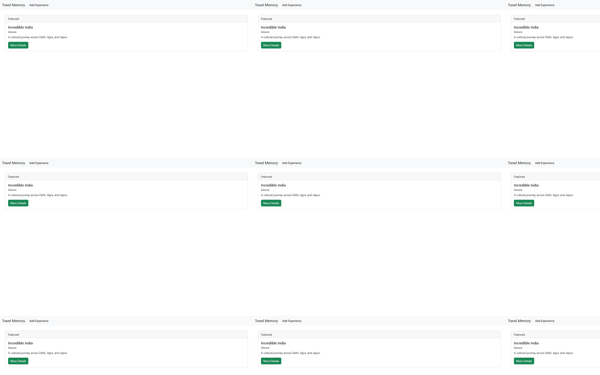
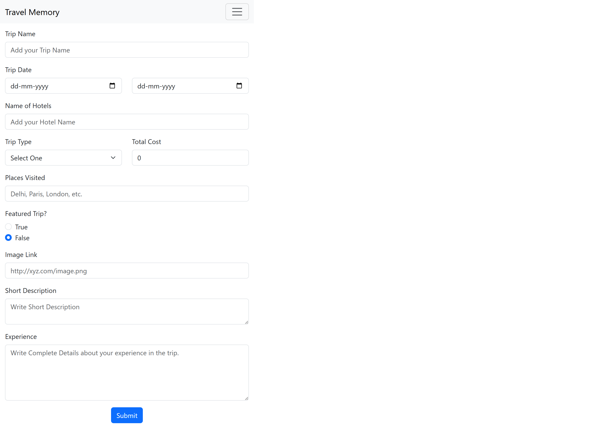
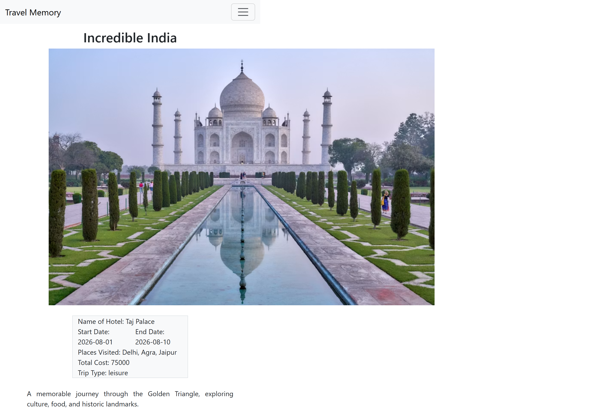
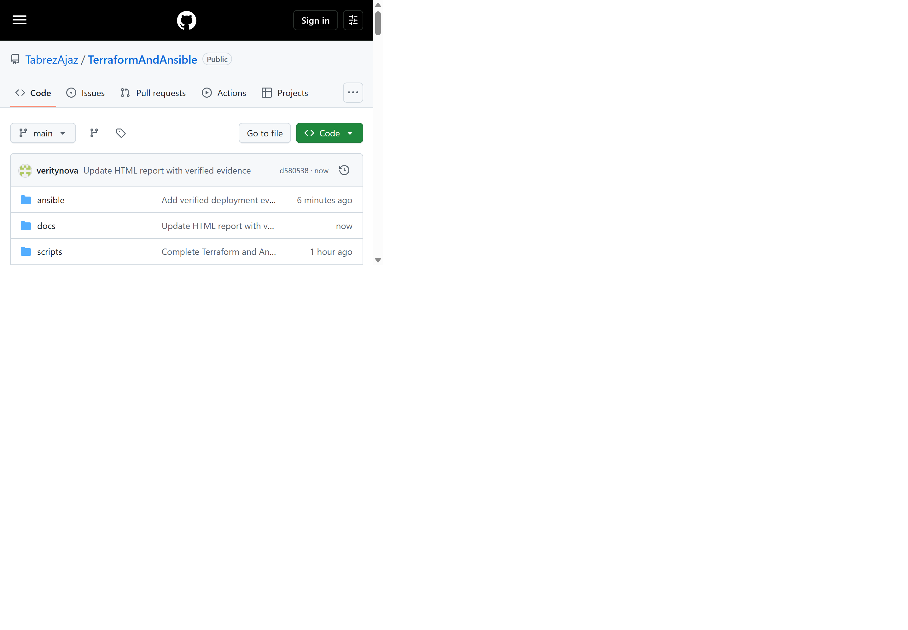

Deploying a MERN Application through Terraform and Ansible
A live, secure and repeatable deployment of the TravelMemory MERN application on AWS using Infrastructure as Code and configuration management.
Abstract
This report documents the complete implementation of the graded assignment Deploying a MERN Application through Terraform and Ansible. Terraform provisions a purpose-built AWS VPC containing one public web subnet and one private database subnet, Internet and NAT gateways, route tables, least-access security groups, an IAM instance role, and two encrypted Ubuntu EC2 instances. Ansible connects through the public host as a bastion, installs and secures MongoDB on the private host, and builds and deploys the prescribed TravelMemory application on the public host with Node.js, Express, React, Nginx and systemd.
The infrastructure and application were executed live in AWS account 113892881067, region ap-south-1. The final idempotency run completed with zero failed and zero unreachable hosts. The React frontend, Express health endpoint and MongoDB-backed trip workflow were verified, and genuine screenshots are embedded in this report.
Table of Contents
- Assignment Objectives and Requirement Traceability
- Solution Architecture and Component Interaction
- Part 1 — Infrastructure Setup with Terraform
- Part 2 — Configuration and Deployment with Ansible
- Security Hardening and Secrets Management
- Deployment Procedure and Automation
- Verification Results and Live Evidence
- Troubleshooting and Resolutions
- Cost, Cleanup and Production Improvements
- Conclusion and Submission Details
1. Assignment Objectives & Traceability
Direct mapping from the supplied brief to working implementation and evidence.
The objective was to gain practical experience deploying a MERN application on AWS with Terraform and Ansible. The required source application is UnpredictablePrashant/TravelMemory.
| Assignment Requirement | Implementation | Status |
|---|---|---|
| Configure AWS and initialize Terraform | AWS IAM Identity Center profile herovired; provider and version constraints | Verified |
| VPC with public and private subnets | 10.20.0.0/16 VPC; 10.20.1.0/24 public; 10.20.2.0/24 private | Deployed |
| Internet Gateway, NAT Gateway and routes | Separate public/private route tables; NAT EIP for private outbound updates | Deployed |
| Two EC2 instances | Ubuntu 22.04 web server with public IP; MongoDB host with private IP only | Running |
| SSH accessibility and restriction | Web SSH restricted to administrator /32; database SSH tunneled through web bastion | Verified |
| Security groups and IAM roles | Separate web/database SGs; SSM and CloudWatch EC2 instance role | Deployed |
| Output web public IP | Terraform outputs web_public_ip and application_url | Verified |
| Install Node.js/NPM and clone application | Ansible web role installs Node.js 20, Nginx and application dependencies | Complete |
| Install and secure MongoDB | MongoDB 7 authorization; admin/application users; private bind and firewall | Complete |
| Configure and start MERN application | Protected environment file, React production build, systemd and Nginx proxy | Live |
| Detailed report and screenshots | This A4 report, architecture diagram and genuine application/repository evidence | Complete |
2. Solution Architecture
Public presentation tier, private persistence tier and automated control path.

The deployment follows the required two-tier topology. The public subnet contains the only Internet-facing instance. Nginx exposes HTTP port 80 and serves the React build while forwarding API routes internally to Express on loopback port 3001. The private subnet contains MongoDB and has no public IPv4 address. Its NAT route supports outbound package installation without permitting unsolicited inbound Internet traffic.
HTTP :80
React Build
127.0.0.1:3001
TCP :27017
Authenticated
2.1 Request and Data Flow
- The browser requests the Terraform-generated application URL.
- Nginx serves static React assets and supports client-side route fallback.
- React calls
/trip; Nginx proxies that route to Express without publicly opening port 3001. - Mongoose authenticates as the least-privilege
travel_appuser over the VPC private address. - MongoDB stores and returns trip documents. The response travels back through Express and Nginx to React.
2.2 Deployed Addressing
| Component | Address | Exposure |
|---|---|---|
| Web EC2 | Public 13.233.113.78Private 10.20.1.112 | HTTP public; SSH restricted |
| Database EC2 | Private 10.20.2.108 | No public IP; web SG only |
| Application | http://13.233.113.78 | Available while resources run |
3. Part 1 — Terraform Infrastructure
Reproducible AWS networking, compute, identity and outputs.
3.1 Provider and Inputs
Terraform uses a constrained AWS 5.x provider and configurable values for the region, project prefix, subnet CIDRs, instance type, existing EC2 key pair and administrator source CIDR. Validation explicitly rejects unrestricted SSH source 0.0.0.0/0.
terraform/terraform.tfvars — secret-free values summarizedaws_region = "ap-south-1" project_name = "travel-memory" admin_cidr = "103.143.187.100/32" key_name = "travelmemory-key" instance_type = "t3.micro"
3.2 Network Resources
- VPC with DNS support and hostnames enabled.
- Public subnet mapped to an Internet Gateway route.
- Private subnet mapped to a NAT Gateway route for controlled outbound access.
- Elastic IP attached to the NAT Gateway.
- Dedicated route-table associations for deterministic routing.
3.3 Compute and IAM
Both instances use the latest matching official Canonical Ubuntu 22.04 image, encrypted gp3 root volumes, detailed monitoring and mandatory IMDSv2 tokens. An EC2 IAM role attaches AmazonSSMManagedInstanceCore and CloudWatchAgentServerPolicy through an instance profile.
3.4 Terraform Execution Evidence
Verified Terraform output · ap-south-1Apply complete! Resources: 16 added, 0 changed, 0 destroyed. ansible_inventory = "./../ansible/inventory.ini" application_url = "http://13.233.113.78" database_private_ip = "10.20.2.108" web_private_ip = "10.20.1.112" web_public_ip = "13.233.113.78" terraform fmt -check -recursive → PASS terraform validate → Success! The configuration is valid.
4. Part 2 — Ansible Configuration
Idempotent operating-system hardening, database setup and application deployment.
4.1 Playbook Structure
| Play / Role | Hosts | Responsibilities |
|---|---|---|
common | All | Packages, unattended upgrades, SSH hardening and baseline UFW policy |
mongodb | Database | Official MongoDB repository, MongoDB 7, authorization, users, private bind and UFW |
web | Web | Node.js 20, NPM, Nginx, Git clone, dependencies, React build, systemd and health check |
4.2 MongoDB Configuration
MongoDB binds only to 127.0.0.1 and 10.20.2.108. Authorization is enabled. A separate administrative identity manages users, while the application identity receives only readWrite on the travelmemory database. Passwords are generated locally, excluded from Git and protected with Ansible no_log.
4.3 Web Application Deployment
The web role clones the prescribed upstream repository into /opt/travelmemory, installs backend and frontend dependencies as an unprivileged system account, writes a mode-0600 backend environment file, builds React for production and deploys Express as travelmemory.service. Nginx serves the build and reverse-proxies API routes.
4.4 Final Idempotency Evidence
ansible-playbook -i ansible/inventory.ini ansible/site.ymlPLAY RECAP ********************************************************************* database : ok=19 changed=0 unreachable=0 failed=0 skipped=0 rescued=0 ignored=0 web : ok=29 changed=0 unreachable=0 failed=0 skipped=1 rescued=0 ignored=0 TASK [web : Verify backend health through Nginx] ******************************* ok: [web] GET http://13.233.113.78/hello Hello World!
5. Security Hardening
Defense in depth across AWS, SSH, host firewalls, services and database credentials.
| Layer | Control | Result |
|---|---|---|
| AWS network | Web SG allows HTTP and administrator-only SSH; database SG trusts only web SG | Enforced |
| Instance metadata | IMDSv2 token requirement | Enforced |
| Storage | Encrypted gp3 root volumes | Enabled |
| SSH | Root/password login and X11 forwarding disabled; key-only authentication | Enabled |
| Host firewall | Deny-by-default UFW rules duplicate security-group boundaries | Enabled |
| MongoDB | No public IP, private bind, authorization and least-privilege application account | Enabled |
| Node service | Unprivileged account, systemd restart policy and sandboxing directives | Enabled |
| Version control | State, plans, keys, secrets, inventory and real variable file ignored | Verified |
6. Deployment Procedure & Automation
One repeatable workflow from authenticated AWS account to verified application.
- Authenticate the AWS CLI through IAM Identity Center using the
heroviredprofile. - Import the public half of the local SSH key as EC2 key pair
travelmemory-key. - Populate ignored Terraform variables with region, key name/path and restricted administrator CIDR.
- Run Terraform initialization, formatting validation, configuration validation, plan and apply.
- Terraform generates the Ansible inventory, including the database bastion tunnel.
- The deployment script generates strong local MongoDB secrets and installs the required Ansible collection.
- Run the playbook; it configures both hosts and performs the backend health check.
- Run validation against the React HTML, Express endpoint and MongoDB-backed endpoint.
Automation scripts included with submissionscripts/deploy.sh # Terraform + secret generation + Ansible + health check scripts/validate.sh # React, Express and MongoDB path validation scripts/destroy.sh # Cost-safe teardown after assessment evidence
7. Verification & Live Evidence
Genuine browser captures from the deployed TravelMemory application and GitHub repository.
7.1 Acceptance Test Results
| Test | Observed Result | Status |
|---|---|---|
| SSH connectivity | Ansible ping returned pong for web and database through bastion | Pass |
| Express health | /hello returned Hello World! | Pass |
| MongoDB data path | /trip/ returned the persisted JSON document | Pass |
| React application | Featured trip rendered from API data | Pass |
| Create workflow | Incredible India POST returned Trip added Successfully | Pass |
| Persistence | Saved trip detail page rendered after a separate GET | Pass |
7.2 Deployed Home Page

7.3 Add Experience Form

7.4 MongoDB Persistence Evidence

7.5 GitHub Submission Repository

8. Troubleshooting Log
Deployment issues found through execution and their verified resolutions.
| Issue | Root Cause | Resolution |
|---|---|---|
| Ubuntu AMI query returned no results | Canonical Jammy name filter incorrectly required hvm-ssd-gp3 | Changed filter to the current hvm-ssd naming and replanned |
| MongoDB did not accept port 27017 | Obsolete journal configuration rejected by MongoDB 7 | Removed obsolete YAML block; service started and authentication users were created |
| First Git clone found a non-empty target | Ansible temporary directory was created under the initial application home | Added incomplete-clone detection, safe cleanup and owned application directory |
npm ci failed | Upstream repository does not contain lockfiles | Used idempotent NPM install supported by the prescribed source repository |
| Nginx still served its default page | Old worker configuration remained active after site replacement | Restarted Nginx after enabling TravelMemory; health endpoint then returned successfully |
9. Cost, Cleanup & Improvements
Responsible handling of short-lived assignment infrastructure.
9.1 Cost Controls
The deployment uses two small t3.micro instances and compact gp3 volumes. The largest avoidable short-lived cost is the NAT Gateway and its Elastic IP. The included destroy script removes all Terraform-managed infrastructure after evidence and assessment are complete.
scripts/destroy.sh after submission review to stop EC2, public IPv4 and NAT Gateway charges.9.2 Production Improvements
- Distribute web and database resources across multiple Availability Zones.
- Add an Application Load Balancer, ACM certificate and HTTPS redirect.
- Store rotated secrets in AWS Secrets Manager or SSM Parameter Store.
- Add automated EBS snapshots or a managed MongoDB service.
- Add CloudWatch alarms, log forwarding and availability monitoring.
- Pin/fork upstream application dependencies with committed lockfiles.
10. Conclusion & Submission
Final outcome, deliverables and repository location.
The assignment has been completed end to end. Terraform successfully created the required VPC, public/private networking, gateways, routes, security groups, IAM role and two EC2 instances. Ansible successfully hardened both hosts, installed authenticated MongoDB, installed and built the TravelMemory MERN application, created persistent services and validated the deployment.
The final application was exercised through its real UI and API. A new trip was written to MongoDB on the private host and subsequently displayed by React through Express and Nginx. The final Ansible run demonstrated idempotency with no changes, failures or unreachable hosts.
| Deliverable | Location |
|---|---|
| GitHub repository | https://github.com/TabrezAjaz/TerraformAndAnsible |
| Live application | http://13.233.113.78 |
| Terraform scripts | terraform/ |
| Ansible playbooks and roles | ansible/ |
| Automation scripts | scripts/ |
| Evidence screenshots | docs/screenshots/ |
| Repository-link submission file | SUBMISSION_LINK.txt |